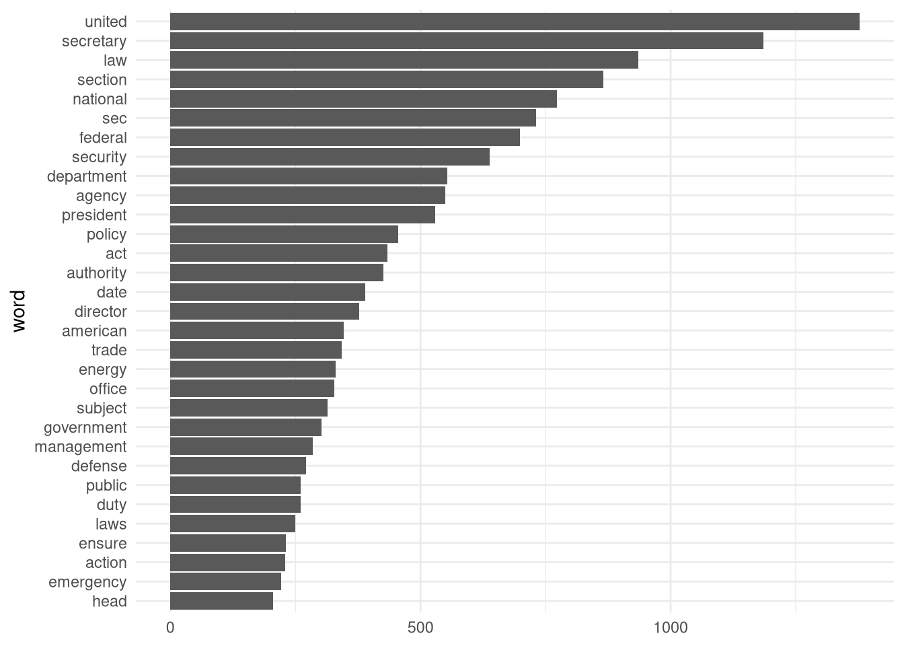

install.packages("jsonlite")11 Text Mining
11.1 Introduction
In this final exercise we will shorty consider different text mining methodologies.
Textmining is becoming evermore important due to the abundance of available data and the ability to process it using modern machine learning architectures. Source for aggregated data sets are provided by Organisations like Common Crawl which have made it their goal to not only archive but also distribute all publicly available website on the internet. A corpus that focuses on distributing books, research papers, and all sorts of other literature is Anna’s Archive. However, the data published on this site usually violates local copyright laws which is why it should be used with caution.
For this exercise, we will use a publicly available dataset sourced from non other than the white house itself: whitehouse.gov releases every executive order placed by the POTUS in the past year.
Our goal will be to analyse some of the wordings and get a feeling of the general sentiment.
11.2 Proprocessing
Before we dive into the exercises, make sure you have the jsonlite-package installed. This library allows us to read .json-files. These files are commonly used in databases and web applications since they allow for an intuitive storage of data that is not necessarily tabular.
library(jsonlite)
library(tidyverse)
library(tidytext)We can then read the dataset white_house detailed_executive_order_dump.json.
data_wh <- fromJSON("data/white_house_detailed_executive_order_dump.json")The Data is already in a tibble format which makes it easier to work with:
data_wh %>% glimpse()Rows: 144
Columns: 5
$ headline <chr> "ADDRESSING STATE AND LOCAL FAILURES TO REBUILD LOS ANGE…
$ date <chr> "January 27, 2026", "January 23, 2026", "January 20, 202…
$ url <chr> "https://www.whitehouse.gov/presidential-actions/2026/01…
$ page_found_on <int> 1, 1, 1, 1, 1, 1, 1, 1, 1, 1, 2, 2, 2, 2, 2, 2, 2, 2, 2,…
$ text <chr> "Presidential Actions\n\nADDRESSING STATE AND LOCAL FAIL…The tibble contains five columns and 144 entries, meaning that the white house has published information about 144 different executive orders.
- The column
headlinecontains the headlines of the executive order. datecontains the date at which an execuitve order was published.urlcontains the link to the article on the whitehouse webpage.page_found_ondescribes on which page index the article has been found.- Lastly,
textcontains the statement of the executive order encoded in a long string.
As a first preprocessing step, we convert the date column into a suitable datatype, since the type <chr> makes it hard to filter for specific date ranges.
data_wh <- data_wh %>% mutate(date = mdy(date)) Since each entry in the text column currently contains a long string, the next step is to split the strings at each line break.
data_wh %>%
select(text) %>%
slice(1) text
1 Presidential Actions\n\nADDRESSING STATE AND LOCAL FAILURES TO REBUILD LOS ANGELES AFTER WILDFIRE DISASTERS\n\nExecutive Orders\n\nJanuary 27, 2026\n\nBy the authority vested in me as President by the Constitution and the laws of the United States of America, it is hereby ordered:\n\nSection\n\n1\n\n.\n\nPurpose\n\n. One year ago, the California State and Los Angeles city and county governments failed to contain wildfires that ravaged Los Angeles and consumed nearly 40,000 acres of homes and businesses. The State and local governments failed to engage in responsible forest management systems out of a misguided commitment to naturalist and climate policies, which increased the severity of the fires. They failed to maintain water distribution and reservoir systems so that these systems would be available and fully functional in case of emergency. They then failed to quickly communicate evacuation warnings and failed to act decisively or cohesively to contain the fire once it started burning. In fact, Mayor Karen Bass was not in Los Angeles to respond to the crisis because she was traveling abroad. This marked one of the greatest failures of elected political leadership in American history, from enabling the wildfires to failing to manage them, and it continues today with the abject failure to rebuild.\n\nWhile the Biden Administration made big promises, debris removal did not actually begin until my Administration, through Executive Order 14181 of January 24, 2025 (Emergency Measures to Provide Water Resources in California and Improve Disaster Response in Certain Areas), initiated the fastest debris-removal operation in United States history. The Federal Government completed hazardous-materials sweeps and cleared over 9,500 properties of over 2.6 million tons of debris in just 6 months.\n\nBut since then, American families and small businesses affected by the wildfires have been forced to continue living in a nightmare of delay, uncertainty, and bureaucratic malaise as they remain displaced from their homes, often without a source of income, while State and local governments delay or prevent reconstruction by approving only a fraction of the permits needed to rebuild.\n\nThe Federal Government has approved numerous individual relief claims to provide financial support directly to owners of homes and businesses and help survivors repair, rebuild, return home, reopen their businesses, and restore their communities. But many homeowners and businesses have been unable to use these funds as they navigate overly burdensome, confusing, and inconsistent permitting requirements, duplicative permitting reviews, procedural bottlenecks, and administrative delays at the city, county, and State levels. Elected leaders have refused to take even the minimum action necessary to allow many of these survivors to move forward and rebuild their lives — the ultimate tragic failure of the State of California and City of Los Angeles to live up to their moral and legal obligations to their citizens. As a result, despite the Federal Government expeditiously clearing debris and doing its part to support survivors, the actions of State and local authorities have ensured that the vast majority of the tens of thousands of homes and businesses destroyed in the wildfires have not yet been rebuilt a year later.\n\nIn furtherance of the Presidential Declaration of a Major Disaster for the State of California (FEMA-4856-DR), immediate and decisive Federal action is required to ensure that Federal disaster assistance is delivered and utilized swiftly, effectively, and without obstruction by State and local governments, to accomplish the purposes for which it is allocated, as well as to support the American people who have been devastated by the Pacific Palisades and Eaton Canyon wildfires.\n\nSec\n\n.\n\n2\n\n.\n\nPolicy\n\n. It is the policy of my Administration that federally funded reconstruction projects for homes and businesses in the wildfire-impacted neighborhoods of the Pacific Palisades and Eaton Canyon areas proceed with the maximum speed consistent with public safety, and that Federal assistance not be frustrated by unnecessary, duplicative, or obstructive permitting requirements that prevent families and businesses from rebuilding.\n\nSec\n\n.\n\n3\n\n.\n\nPreempting State Permitting Obstacles\n\n. (a) The Secretary of Homeland Security (Secretary), acting through the Administrator of the Federal Emergency Management Agency (FEMA), and the Administrator of the Small Business Administration (SBA) shall each consider promulgating regulations to advance the policies of this order. In particular, the Administrator of the SBA and the Secretary, through the Administrator of FEMA, shall consider promulgating regulations that:\n\n(i) preempt State or local permitting processes, and other similar pre-approval requirements, that each agency has found to have unduly impeded the timely use of Federal emergency-relief funds by homeowners, businesses, or houses of worship in rebuilding such structures following a disaster; and\n\n(ii) replace preempted State or local permitting regimes, or other similar pre-approval requirements, with a requirement that builders self-certify to a Federal designee from each agency that they have complied with all applicable substantive State and local health and safety standards with respect to the structure proposed to be rebuilt using Federal emergency-relief funds.\n\n(b) The Secretary, through the Administrator of FEMA, and the Administrator of the SBA shall each publish proposed regulations under subsection (a) of this section, if any, within 30 days of the date of this order and final regulations within 90 days of the date of this order. Each agency head shall further consider whether notice and comment is unnecessary under 5 U.S.C. 553 or any other statute.\n\n(c) The Secretary, through the Administrator of FEMA, shall continue to review all repairs and construction activities conducted under this order for compliance with applicable health, safety, and other substantive standards.\n\nSec\n\n.\n\n4\n\n.\n\nExpediting Federal Response\n\n. (a) The Federal Government has already taken action to expedite administrative processes related to water delivery, as detailed in Executive Order 14181 of January 24, 2025 (Emergency Measures to Provide Water Resources in California and Improve Disaster Response in Certain Areas). In addition, the heads of relevant executive departments and agencies (agencies) shall seek to use all authorities available under Federal environmental, historic preservation, natural resource laws, or other similar laws, including the National Environmental Protection Act (42 U.S.C. 4321\n\net seq.\n\n), the Endangered Species Act (16 U.S.C. 1531\n\net seq\n\n.), and the National Historic Preservation Act (54 U.S.C. 300101\n\net seq.\n\n), to expedite waivers, permits, reviews, consultations, or approvals with respect to homes, businesses, or other such structures proposed to be rebuilt using Federal emergency-relief funds that are required to facilitate Federal response and recovery actions that will advance the policy of this order, consistent with applicable law.\n\n(b) The heads of relevant agencies shall take steps to ensure that the process for evaluating and issuing such waivers, permits, reviews, consultations, or approvals shall be limited to the minimum scope and duration required to expeditiously advance the policy of this order and implement Individual Assistance and Hazard Mitigation Grant Programs while ensuring public health and safety.\n\n(c) The heads of relevant agencies shall each designate a senior official from their agency to ensure timely execution of these actions without delay.\n\nSec\n\n.\n\n5\n\n.\n\nLegislation\n\n. Within 90 days of the date of this order, the Secretary, through the Administrator of FEMA, and the Administrator of the SBA, in consultation with the Assistant to the President for Domestic Policy and the White House Director of Legislative Affairs, shall submit to the President, through the Director of the Office of Management and Budget, legislative proposals that enable FEMA and SBA to address situations in which States or local governments are not enabling timely recovery after disasters, including through appropriate regulation.\n\nSec\n\n.\n\n6\n\n.\n\nAccountability for Use of Taxpayer Dollars\n\n. (a) The Secretary, through the Administrator of FEMA, shall:\n\n(i) within 30 days of the date of this order, determine what amount, if any, of the nearly $3 billion in unspent Hazard Mitigation Grant Program (HMGP) funding granted to California, which was awarded to mitigate hazards, including the threat of future wildfires to the citizens of California, was awarded arbitrarily, capriciously, or contrary to law; and\n\n(ii) within 60 days of the date of this order, conduct a Federal audit of California’s use of HMGP funding, including of whether funded projects were completed as approved and on time, whether projected risk reduction matched actual outcomes, and whether California used Federal funding in a way that demonstrably mitigated the impact of future wildfires on its citizens.\n\n(b) Within 30 days of the completion of the audit described in subsection (a)(ii) of this section, the Secretary, through the Administrator of FEMA, shall make administrative determinations in light of the audit’s findings and recommendations, and shall enforce such determinations by, where appropriate, imposing future grant conditions, initiating recoupment or recovery actions in accordance with applicable law, or deploying oversight and technical assistance to expedite the administration and use of HMGP funds for individuals, families, and small businesses, to implement this order.\n\nSec\n\n.\n\n7\n\n.\n\nGeneral Provisions\n\n. (a) Nothing in this order shall be construed to impair or otherwise effect:\n\n(i) the authority granted by law to an executive department or agency, or the head thereof; or\n\n(ii) the functions of the Director of the Office of Management and Budget related to budgetary, administrative, or legislative proposals.\n\n(b) This order shall be implemented consistent with applicable law and subject to the availability of appropriations.\n\n(c) This order is not intended to, and does not, create any right or benefit, substantive or procedural, enforceable at law or in equity by any party against the United States, its departments, agencies, or entities, its officers, employees, or agents, or any other person.\n\n(d) The costs for publication of this order shall be borne by the Department of Homeland Security.\n\nDONALD J. TRUMP\n\nTHE WHITE HOUSE,\n\nJanuary 23, 2026.A linebreak is indicated by the \n symbol, so using the str_split()-function allows us to seperate the long string into a list of strings where each element contains exactly one line.
str_list <- data_wh %>%
select(text) %>%
sapply(str_split,pattern="\n") The list str_list now contains a list of length 144 where each entry contains another list of strings, i.e. the statement split by line breaks.
To combine this list of strings with the original dataset, we can simply remove the column text and add this newly created column str_list using the cbind()-function. As a last step, we remove the columns headline, url and page, since we are only interested in the dates and texts so far.
words_wh <- data_wh %>%
select(-text) %>%
cbind(.,str_list) %>%
select(-c(headline,url,page_found_on)) The next step is to extract the relevant tokens from the text-column. As of now, each entry of the text-column is still a list, which is why the first step of extracting the word tokens is converting the lists into individual elements. Since each element is an individual line, the dataframe now contains as many rows as there are lines of text in the whole dataset.
words_wh <- words_wh %>%
unnest(text)
words_wh %>% glimpse()Rows: 25,038
Columns: 2
$ date <date> 2026-01-27, 2026-01-27, 2026-01-27, 2026-01-27, 2026-01-27, 2026…
$ text <chr> "Presidential Actions", "", "ADDRESSING STATE AND LOCAL FAILURES …We now want to extract the word tokens using the unnest_tokens function. The output argument specifies the name of the resulting column containing the tokens. The input-argument specifies which column of the data frame contains the raw data. Lastly the token-argument specifies what kind of token shall be extracted. We will stick to words for now.
words_wh <- words_wh %>%
unnest_tokens(
output = word,
input = text,
token = "words"
)
words_wh %>% glimpse()Rows: 199,433
Columns: 2
$ date <date> 2026-01-27, 2026-01-27, 2026-01-27, 2026-01-27, 2026-01-27, 2026…
$ word <chr> "presidential", "actions", "addressing", "state", "and", "local",…The new dataset contains roughly 200k words, of which a majority are so-called stop words like "and", "or", and "which". Since these words only offer little information, we want to filter them directly. Luckily the stop_words dataset contains a list of all commonly used stop words. We can use the anti_join()-function to remove these from the word-column.
data("stop_words")
words_wh_filtered <- words_wh %>%
anti_join(stop_words)
glimpse(words_wh_filtered)Rows: 105,029
Columns: 2
$ date <date> 2026-01-27, 2026-01-27, 2026-01-27, 2026-01-27, 2026-01-27, 2026…
$ word <chr> "presidential", "actions", "addressing", "local", "failures", "re…The words_wh_filtered dataset now contains only roughly 105k words, meaning we reduced the size by approximately 50%.
Say, we want to get an overview of the most used nouns in the dataset. We can use another dataset called parts_of_speech which contains commonly used words and their respective type.
data("parts_of_speech")
glimpse(parts_of_speech)Rows: 208,259
Columns: 2
$ word <chr> "3-d", "3-d", "4-f", "4-h'er", "4-h", "a'", "a-1", "a-axis", "a-b…
$ pos <chr> "Adjective", "Noun", "Noun", "Noun", "Adjective", "Adjective", "N…The semi_join()-function behaves similiraly to the filter()-function, allowing us to only retain words in the word column that are present in the nouns of the parts_of_speech-dataset.
nouns_wh_filtered <- words_wh_filtered %>%
semi_join(
parts_of_speech %>%
filter(str_detect(pos,"Noun")),
by = "word"
)
nouns_wh_filtered %>% glimpse()Rows: 51,116
Columns: 2
$ date <date> 2026-01-27, 2026-01-27, 2026-01-27, 2026-01-27, 2026-01-27, 2026…
$ word <chr> "local", "wildfire", "january", "authority", "president", "consti…Let us now visualize the most frequently used nouns. We define “most frequently” in terms of the \(99\%\)-quantile, meaning that only words should be contained that appear in the \(99\%\)-quantile of the frequency. Using a column-plot, we can neatly visualize the most frequently used nouns:
nouns_wh_filtered %>%
count(word, sort=TRUE) %>%
filter(
n>quantile(n,0.99)
) %>%
mutate(word = reorder(word,n)) %>%
ggplot(aes(x=word,y=n))+
geom_col()+
coord_flip()+
labs(y=NULL)+
theme_minimal()
11.3 Frequency Tables
Now that we have a broad overview of the most frequently used words, we now want to get a feeling for the importance of the different tokens.
The term frequency measures the relative frequency of a term within a certain document. In our example, we will consider each month a document. Furthermore, to reduce computational effort, we will still only use the most frequently used terms.:
nouns_to_filter <- nouns_wh_filtered %>%
count(word, sort=TRUE) %>%
filter(
n>quantile(n,0.99)
) %>%
select(word)To compute the term frequency, we have to proceed as follows:
- Filter for the most frequently used terms using the
filter()-function. This is equivalent to using thesemi_join()-statemtn. - Next, we have have to extract the month from the date column using the
month()-function. - By grouping for the
monthandwordcolumn we create groups for each words occurence in the respective month. - Using the
summarise(n=n())-function returns the absolute frequency of each word in the respective month. - To create relative frequencies, we can simply use the
mutate()-function. Since the data is still grouped, thesum()-function is also applied group-wise, meaning that the return value is the relative frequency with respect to the different months. - Then, to create the frequency table, we use the
pivot_wider()-function, that pivots the long table into a wider format. The wider format creates a column for each value specified with thenames_fromargument. Setting it tomonthimplies, that the wider format will have 12 different columns, one for each month The argumentvalues_fromspecifies how the different rows of the columns shall be filled. Setting it torel_frequencyyields the relative frequencies of each row in the respective month. - As a last step, we have to take care of the case when words only occur in a certain month. The wider table format currently treats these entries in the months where a word does not occur as
NAvalues. Ideally, we would like to encode them with0to indicate that they did not occur in the specific month. We can do that by using themutate()-function across every column and replace the valueNAwith 0.
tbl_freq <- nouns_wh_filtered %>%
filter(word %in% pull(nouns_to_filter)) %>%
mutate(month = month(date)) %>%
group_by(month,word) %>%
summarise(n = n()) %>%
mutate(rel_freq = n/sum(n)) %>%
select(word,month,rel_freq) %>%
pivot_wider(names_from = month, values_from = rel_freq) %>%
mutate(across(everything(),~replace_na(.,0)))
tbl_freq %>% head(4)# A tibble: 4 × 13
word `1` `2` `3` `4` `5` `6` `7` `8` `9` `10`
<chr> <dbl> <dbl> <dbl> <dbl> <dbl> <dbl> <dbl> <dbl> <dbl> <dbl>
1 act 0.0228 0 0.0145 0.0351 0.0180 0.0519 0.0224 0.0230 0.0589 0
2 action 0.0180 0 0.0135 0.0171 0.0150 0.00985 0.0202 0.0118 0.0161 0
3 agency 0.0516 0.0233 0.0518 0.0362 0.0553 0.0179 0.0229 0.0439 0.0152 0.107
4 americ… 0.0264 0.0388 0.0264 0.0252 0.0234 0.0188 0.0186 0.0292 0.0116 0.0194
# ℹ 2 more variables: `11` <dbl>, `12` <dbl>Interestingly, neither the word act nor action seem to have been mentioned in the month “February”. In January, every 20-th noun in the most frequently used word list was agency, since it’s relative frequency is approximately 0.05.
To compute the tf-idf score which measures the importance of words in a specific document, we now have to calculate the inverse document frequency defined as
\[\begin{equation*} \text{idf} = \begin{pmatrix} \log\left(\frac{N}{\text{df}_1}\right),...,\log\left(\frac{N}{\text{df}_K}\right) \end{pmatrix} \end{equation*}\]
Note, that \(\text{idf}\) is a vector with as many entries as words, i.e. \(\text{idf}_i =\log(\frac{N}{\text{df}_i})\) where \(N\) is the total number of documents.
The calculation of the inverse document frequency extends the computation of the document frequency. Since the first four steps are the same, we will continue in line 3.
- Instead of grouping by
monthandword, we now group bywordandmonth, meaning, that there is a group for each word. - Summarising the groups with respect to the occurances of each term, we obtain a tibble containing the frequency of each word in the respective month.
- This tibble needs to be grouped by the word again, since we are interested in the number of months in which the respective word occured.
# A tibble: 6 × 2
word n_month
<chr> <int>
1 act 10
2 action 10
3 agency 12
4 american 12
5 authority 12
6 date 12Now, that we have obtained the number of months in which each word occurs, we can calculate the log-ratio by applying the mutate function:
inv_doc_freq <- inv_doc_freq %>%
mutate(inv_doc_freq = log(12/n_month)) %>%
select(word,inv_doc_freq)
inv_doc_freq %>% head()# A tibble: 6 × 2
word inv_doc_freq
<chr> <dbl>
1 act 0.182
2 action 0.182
3 agency 0
4 american 0
5 authority 0
6 date 0 As a last step, we have to compute the tf-idf weights by multiplying the resulting vector inv_doc_freq elementwise with each column of the termfrequency matrix. This is most easily done by using the * on the matrix representations of the respective data frames:
m_tbl_freq <- tbl_freq %>%
select(-word) %>%
as.matrix()
m_inv_doc_freq <- inv_doc_freq %>%
select(-word) %>%
as.matrix()
tf_idf <- (m_tbl_freq * as.vector(m_inv_doc_freq)) Since the matrix format lacks proper display properties, we can convert it back to a tibble and add the words as an initial column:
tf_idf <- tf_idf %>%
as_tibble() %>%
cbind(
inv_doc_freq %>% select(word),
.
)
tf_idf %>% head() word 1 2 3 4 5 6
1 act 0.004158595 0 0.002645080 0.006398104 0.003285073 0.009467010
2 action 0.003283101 0 0.002456145 0.003125791 0.002737561 0.001795467
3 agency 0.000000000 0 0.000000000 0.000000000 0.000000000 0.000000000
4 american 0.000000000 0 0.000000000 0.000000000 0.000000000 0.000000000
5 authority 0.000000000 0 0.000000000 0.000000000 0.000000000 0.000000000
6 date 0.000000000 0 0.000000000 0.000000000 0.000000000 0.000000000
7 8 9 10 11 12
1 0.004080341 0.004189841 0.010734365 0 0.004188091 0.004356949
2 0.003682259 0.002158403 0.002927554 0 0.003071267 0.002010900
3 0.000000000 0.000000000 0.000000000 0 0.000000000 0.000000000
4 0.000000000 0.000000000 0.000000000 0 0.000000000 0.000000000
5 0.000000000 0.000000000 0.000000000 0 0.000000000 0.000000000
6 0.000000000 0.000000000 0.000000000 0 0.000000000 0.000000000The resulting dataframe contains for each word the \(\text{tf-idf}\) weight in the respective document.
11.4 Sentiment Analysis
install.packages("textdata")
get_sentiments("afinn")TBD